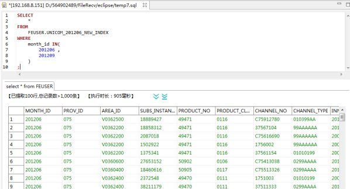
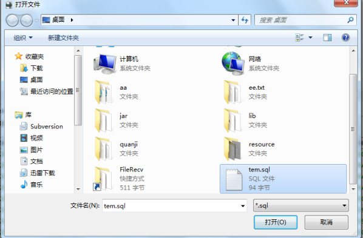

SQL编辑器用于编辑和执行SQL。使用SQL编辑器可以通过SQL命令的方式与行云服务器进行交互。
打开sql编辑器,首先要成功建立连接，它有两个入口:
第一是在工具栏中单击;
第二是右键连接单击SQL编辑器,
打开编辑界面,输入一条sql语句,在数据表中会查询出结果,如下图所示
执行SQL语句时，如在同一编辑器内有多条SQL语句，可选中其中一条执行，如下图所示
如不选中一条，则按先后顺序执行。
执行sql语句的入口是:
一、工具栏中 图标，
图标，
四、快捷键F8
执行结果如图所示:
执行中：
执行成功：
终止SQL语句的入口：
二、点击执行过程中下图中的红色按钮：
终止成功：
右键SQL编辑器左侧栏，选中 “显示行号”，就会在侧栏出现行号，如图：
在SQL输入中，当光标在括号左右时，与之对应的括号，会自动黑框选中，如图：
SQL格式化的入口是：
二、菜单栏SQL编辑器中的 “SQL美化” 按钮：
格式化结果如图：
当执行完一条sql语句时，会在表格中展示出执行完sql语句的结果集，并且返回执行时间、显示行数和总记录数。如下图所示

单击表格列名进行排序，列后箭头向下为降序，向上则为升序。单击位置如图所示
分页在查询结果栏中：
点击 为追加显示下一页的记录
点击 为追加显示所有记录
查看结果集中单元格里面的内容时，双击想要查看的内容单元格，弹出一个对话框，对话框里面展示了单元格的内容，如图：
复制对话框里面的内容时，右键进行复制，如下图所示
执行完sql语句后,导出结果集到本地,入口是：
一、工具栏中的图标,点击该图标
点击后弹如下图所示对话框
添加记录数，点击确定，弹出如图所示的对话框：
选择保存路径，点击保存，结果接导出成功：如图所示
执行计划的入口是(代理模式下)：工具栏中的，如图：
点击后会生成执行计划如下：
选中图中的节点右键对执行计划进行操作：
打开sql文件的入口是:菜单栏中的 “文件” 按钮中的 “打开文件”按钮：
点击后出现以下弹出框：
选择sql文件并点击 “打开” 按钮。
保存的入口：
二、在SQL编辑器中右键：
首次保存时，会提示确定保存路径，输入文件名，并点击保存：
保存的入口为：菜单栏中的 “文件” 按钮中的 “另存为”按钮：
点击会提示确定保存路径，输入文件名，并点击保存：
打印的入口为：菜单栏中的 “文件” 按钮中的 “打印”按钮：
点击打印，会打印出编辑器中的SQL语句：

撤销入口在 菜单栏力的 “编辑” 中的 “撤销”，也可使用快捷键Ctrl+Z：
重做入口在 菜单栏力的 “编辑” 中的 “重做”，也可使用快捷键Ctrl+Y：
剪切入口在 菜单栏力的 “编辑” 中的 “剪切”，也可使用快捷键Ctrl+X：
复制入口在 菜单栏力的 “编辑” 中的 “复制”，也可使用快捷键Ctrl+C：
粘贴入口在 菜单栏力的 “编辑” 中的 “粘贴”，也可使用快捷键Ctrl+V：
查找并替换入口在 菜单栏力的 “编辑” 中的 “查找并替换”，也可使用快捷键Ctrl+F：
点击后会出现：
在 “查找(F):” 框中输入需要查找的字段，点击查找 ”(N)” 查询，
二、查询条件：
1、方向：
向前： 往当前对象之前查找
向后： 往当前对象之后查找
2、作用域：
全部：查询SQL编辑器中的所有字段
选择的行： 查询鼠标选中的字段
区分大小写：区分大小写
循环搜索：从当前对象查询到末尾，会重头查询
全字匹配：查找完全匹配的完整的词
增量：随着上面查找输入，会自动查找，比如先查a,输入a,编辑器找到a,再输入b,则查找到ab
正则匹配：通过正则表达式查询
三、替换：
在 “替换为(E)”框中输入替换为的字段，
点击 “替换(R)” ，替换当前地段，
点击 “替换/查找(D)” ，替换当前字段并查找下一个查找对象，
点击 “全部替换(A)”，替换所有匹配对象。
查找下一个入口在 菜单栏力的 “编辑” 中的 “查找下一个”，也可使用快捷键Ctrl+K：
查找上一个入口在 菜单栏力的 “编辑” 中的 “查找上一个”，也可使用快捷键Ctrl+Shift+K：
添加行注释入口在 菜单栏力的 “编辑” 中的 “添加行注释”：
点击后在编辑器行中，会添加注释：

添加块注释入口在 菜单栏力的 “编辑” 中的 “添加块注释”：
在SQL编辑器中选中需要注释的字段，点击该按钮后，如图：
自动换行入口在 菜单栏力的 “编辑” 中的 “自动换行”：
当输入Sql语句超出边界时，会转到下一行中输入。
更改为大写入口在 菜单栏力的 “编辑” 中的 “更改为大写”，也可使用快捷键Ctrl+Shift+X：
更改为小写入口在 菜单栏力的 “编辑” 中的 “更改为小写”，也可使用快捷键Ctrl+Shift+Y：
SQL编辑器可通过选中表名，在右键菜单中选择表字段来选取当前表的字段，还通过shift键、ctrl键实现多选，拖动选中的表字段添加到SQL编辑器中。